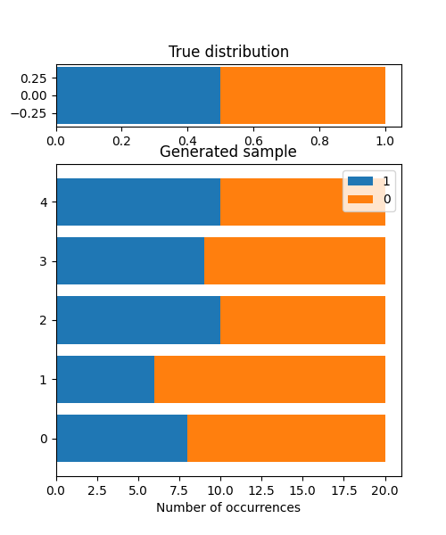
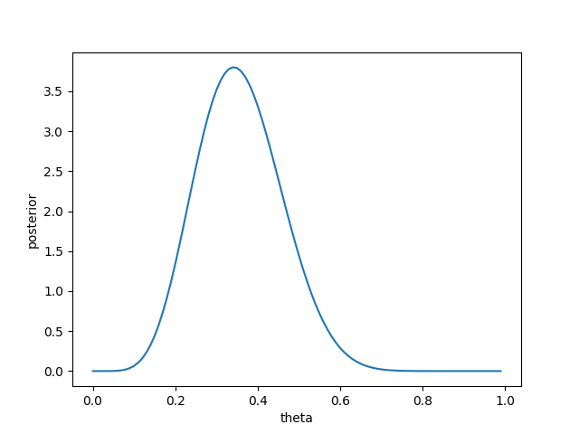

bayesml.bernoulli package#
Module contents#
This module provides the Bernoulli distribution with the beta prior distribution.

Stochastic Data Generative Model#
The stochastic data generative model is as follows:
\(x \in \{ 0, 1\}\): a data point
\(\theta \in [0, 1]\): a parameter
Prior Distribution#
The prior distribution is as follows:
\(\alpha_0 \in \mathbb{R}_{>0}\): a hyperparameter
\(\beta_0 \in \mathbb{R}_{>0}\): a hyperparameter
\(B(\cdot,\cdot): \mathbb{R}_{>0} \times \mathbb{R}_{>0} \to \mathbb{R}_{>0}\): the Beta function
Posterior Distribution#
The posterior distribution is as follows:
\(x^n = (x_1, x_2, \dots , x_n) \in \{ 0, 1\}^n\): given data
\(\alpha_n \in \mathbb{R}_{>0}\): a hyperparameter
\(\beta_n \in \mathbb{R}_{>0}\): a hyperparameter
where the updating rule of the hyperparameters is
Predictive Distribution#
The predictive distribution is as follows:
\(x_{n+1} \in \{ 0, 1\}\): a new data point
\(\alpha_\mathrm{p} \in \mathbb{R}_{>0}\): a parameter
\(\beta_\mathrm{p} \in \mathbb{R}_{>0}\): a parameter
\(\theta_\mathrm{p} \in [0,1]\): a parameter
where the parameters are obtained from the hyperparameters of the posterior distribution as follows.
Star Us on GitHub#
Open the repo and hit ☆ Star in the top right!

Classes#
- class bayesml.bernoulli.GenModel(theta=0.5, h_alpha=0.5, h_beta=0.5, seed=None)#
Bases:
GenerativeThe stochastic data generative model and the prior distribution.
- Parameters:
- thetafloat, optional
a real number in \([0, 1]\), by default 0.5.
- h_alphafloat, optional
a positive real number, by default 0.5.
- h_betafloat, optional
a positive real number, by default 0.5.
- seed{None, int}, optional
A seed to initialize numpy.random.default_rng(), by default None.
Methods
Generate the parameter from the prior distribution.
gen_sample(sample_size)Generate a sample from the stochastic data generative model.
Get constants of GenModel.
Get the hyperparameters of the prior distribution.
Get the parameter of the sthocastic data generative model.
load_h_params(filename)Load the hyperparameters to h_params.
load_params(filename)Load the parameters saved by
save_params.save_h_params(filename)Save the hyperparameters using python
picklemodule.save_params(filename)Save the parameters using python
picklemodule.save_sample(filename, sample_size)Save the generated sample as NumPy
.npzformat.set_h_params([h_alpha, h_beta])Set the hyperparameters of the prior distribution.
set_params([theta])Set the parameter of the sthocastic data generative model.
visualize_model([sample_size, sample_num])Visualize the stochastic data generative model and generated samples.
- get_constants()#
Get constants of GenModel.
This model does not have any constants. Therefore, this function returns an emtpy dict
{}.- Returns:
- constantsan empty dict
- set_h_params(h_alpha=None, h_beta=None)#
Set the hyperparameters of the prior distribution.
- Parameters:
- h_alphafloat, optional
a positive real number, by default None.
- h_betafloat, optional
a positive real number, by default None.
- get_h_params()#
Get the hyperparameters of the prior distribution.
- Returns:
- h_paramsdict of {str: float}
"h_alpha": The value ofself.h_alpha"h_beta": The value ofself.h_beta
- gen_params()#
Generate the parameter from the prior distribution.
The generated vaule is set at
self.theta.
- set_params(theta=None)#
Set the parameter of the sthocastic data generative model.
- Parameters:
- thetafloat, optional
a real number \(\theta \in [0, 1]\), by default None.
- get_params()#
Get the parameter of the sthocastic data generative model.
- Returns:
- paramsdict of {str:float}
"theta": The value ofself.theta.
- gen_sample(sample_size)#
Generate a sample from the stochastic data generative model.
- Parameters:
- sample_sizeint
A positive integer
- Returns:
- xnumpy ndarray
1 dimensional array whose size is
sammple_sizeand elements are 0 or 1.
- save_sample(filename, sample_size)#
Save the generated sample as NumPy
.npzformat.It is saved as a NpzFile with keyword: “x”.
- Parameters:
- filenamestr
The filename to which the sample is saved.
.npzwill be appended if it isn’t there.- sample_sizeint
A positive integer
See also
- visualize_model(sample_size=20, sample_num=5)#
Visualize the stochastic data generative model and generated samples.
- Parameters:
- sample_sizeint, optional
A positive integer, by default 20.
- sample_numint, optional
A positive integer, by default 5.
Examples
>>> from bayesml import bernoulli >>> model = bernoulli.GenModel() >>> model.visualize_model() theta:0.5 x0:[1 1 0 0 0 1 0 1 0 0 0 1 0 1 0 1 0 1 0 0] x1:[1 1 0 0 0 0 0 1 1 0 0 0 1 0 1 0 0 0 0 0] x2:[0 1 0 1 0 0 1 0 0 0 1 0 1 1 1 0 1 0 1 1] x3:[0 0 0 1 1 0 1 0 1 0 0 0 1 0 1 0 1 0 1 1] x4:[1 0 1 1 1 1 0 1 0 0 1 1 0 0 0 0 0 0 1 1]
- class bayesml.bernoulli.LearnModel(h0_alpha=0.5, h0_beta=0.5)#
Bases:
Posterior,PredictiveMixinThe posterior distribution and the predictive distribution.
- Parameters:
- h0_alphafloat, optional
a positive real number, by default 0.5.
- h0_betafloat, optional
a positive real number, by default 0.5.
- Attributes:
- hn_alphafloat
a positive real number
- hn_betafloat
a positive real number
- p_thetafloat
a real number \(\theta_\mathrm{p} \in [0, 1]\)
Methods
Calculate log marginal likelihood
Calculate the parameters of the predictive distribution.
estimate_interval([credibility])Credible interval of the parameter.
estimate_params([loss, dict_out])Estimate the parameter of the stochastic data generative model under the given criterion.
fit(x)Fit the model to the data.
Get constants of LearnModel.
Get the initial values of the hyperparameters of the posterior distribution.
Get the hyperparameters of the posterior distribution.
Get the parameters of the predictive distribution.
load_h0_params(filename)Load the hyperparameters to h0_params.
load_hn_params(filename)Load the hyperparameters to hn_params.
make_prediction([loss])Predict a new data point under the given criterion.
overwrite_h0_params()Overwrite the initial values of the hyperparameters of the posterior distribution by the learned values.
pred_and_update(x[, loss])Predict a new data point and update the posterior sequentially.
predict()Predict the next data point.
Predict the next data point.
reset_hn_params()Reset the hyperparameters of the posterior distribution to their initial values.
save_h0_params(filename)Save the hyperparameters using python
picklemodule.save_hn_params(filename)Save the hyperparameters using python
picklemodule.set_h0_params([h0_alpha, h0_beta])Set initial values of the hyperparameter of the posterior distribution.
set_hn_params([hn_alpha, hn_beta])Set updated values of the hyperparameter of the posterior distribution.
Update the hyperparameters of the posterior distribution using traning data.
Visualize the posterior distribution for the parameter.
- get_constants()#
Get constants of LearnModel.
This model does not have any constants. Therefore, this function returns an emtpy dict
{}.- Returns:
- constantsan empty dict
- set_h0_params(h0_alpha=None, h0_beta=None)#
Set initial values of the hyperparameter of the posterior distribution.
- Parameters:
- h0_alphafloat, optional
a positive real number, by default None.
- h0_betafloat, optionanl
a positive real number, by default None.
- get_h0_params()#
Get the initial values of the hyperparameters of the posterior distribution.
- Returns:
- h0_paramsdict of {str: float}
"h0_alpha": The value ofself.h0_alpha"h0_beta": The value ofself.h0_beta
- set_hn_params(hn_alpha=None, hn_beta=None)#
Set updated values of the hyperparameter of the posterior distribution.
- Parameters:
- hn_alphafloat, optional
a positive real number, by default None.
- hn_betafloat, optional
a positive real number, by default None.
- get_hn_params()#
Get the hyperparameters of the posterior distribution.
- Returns:
- hn_paramsdict of {str: float}
"hn_alpha": The value ofself.hn_alpha"hn_beta": The value ofself.hn_beta
- update_posterior(x)#
Update the hyperparameters of the posterior distribution using traning data.
- Parameters:
- xnumpy.ndarray
All the elements must be 0 or 1.
- estimate_params(loss='squared', dict_out=False)#
Estimate the parameter of the stochastic data generative model under the given criterion.
- Parameters:
- lossstr, optional
Loss function underlying the Bayes risk function, by default “squared”. This function supports “squared”, “0-1”, “abs”, and “KL”.
- dict_outbool, optional
If
True, output will be a dict, by defaultFalse.
- Returns:
- estimator{float, None, rv_frozen} or dict of {strfloat, None}
The estimated values under the given loss function. If it is not exist, None will be returned. If the loss function is “KL”, the posterior distribution itself will be returned as rv_frozen object of scipy.stats.
- estimate_interval(credibility=0.95)#
Credible interval of the parameter.
- Parameters:
- credibilityfloat, optional
A posterior probability that the interval conitans the paramter, by default 0.95.
- Returns:
- lower, upper: float
The lower and the upper bound of the interval
- visualize_posterior()#
Visualize the posterior distribution for the parameter.
Examples
>>> from bayesml import bernoulli >>> gen_model = bernoulli.GenModel() >>> x = gen_model.gen_sample(20) >>> print(x) [0 1 1 0 1 0 0 0 0 1 0 0 0 1 0 1 0 0 1 0] >>> learn_model = bernoulli.LearnModel() >>> learn_model.update_posterior(x) >>> learn_model.visualize_posterior()

- get_p_params()#
Get the parameters of the predictive distribution.
- Returns:
- p_paramsdict of {str: float}
"p_theta": The value ofself.p_theta
- calc_pred_dist()#
Calculate the parameters of the predictive distribution.
- make_prediction(loss='squared')#
Predict a new data point under the given criterion.
- Parameters:
- lossstr, optional
Loss function underlying the Bayes risk function, by default “squared”. This function supports “squared”, “0-1”, “abs”, and “KL”.
- Returns:
- Predicted_value{int, numpy.ndarray}
The predicted value under the given loss function. If the loss function is “KL”, the predictive distribution itself will be returned as numpy.ndarray.
- pred_and_update(x, loss='squared')#
Predict a new data point and update the posterior sequentially.
- Parameters:
- xint
It must be 0 or 1
- lossstr, optional
Loss function underlying the Bayes risk function, by default “squared”. This function supports “squared”, “0-1”, “abs”, and “KL”.
- Returns:
- Predicted_value{int, numpy.ndarray}
The predicted value under the given loss function. If the loss function is “KL”, the predictive distribution itself will be returned as numpy.ndarray.
- calc_log_marginal_likelihood()#
Calculate log marginal likelihood
- Returns:
- log_marginal_likelihoodfloat
The log marginal likelihood.
- fit(x)#
Fit the model to the data.
This function is a wrapper of the following functions:
>>> self.reset_hn_params() >>> self.update_posterior(x) >>> return self
- Parameters:
- xnumpy.ndarray
All the elements must be 0 or 1.
- Returns:
- selfLearnModel
The fitted model.
- predict()#
Predict the next data point.
This function is a wrapper of the following functions:
>>> self.calc_pred_dist() >>> return self.make_prediction(loss="0-1")
- Returns:
- predicted_valueint
The predicted value under the 0-1 loss function.
- predict_proba()#
Predict the next data point.
This function is a wrapper of the following functions:
>>> self.calc_pred_dist() >>> return self.make_prediction(loss="KL")
- Returns:
- predicted_distributionnumpy.ndarray
The predicted distribution under the KL loss function.